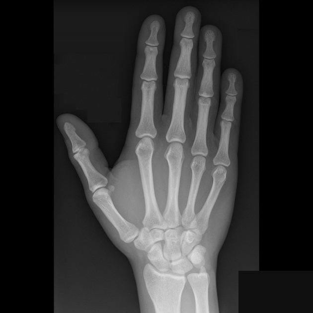

reconstruct · isolate · identify
Where does it go?
The supplied labeled diagrams have been spliced into a clean hand radiograph. Each round reveals only one annotated region; use the distribution pattern to choose every diagnosis that includes it.
Reading rule
Blue marks are location prompts only. The answer key follows the supplied distribution diagram and is not a substitute for a complete clinical differential.
Blue marks are location prompts only. The answer key follows the supplied distribution diagram and is not a substitute for a complete clinical differential.
Target 01
Loading…
Question 1 of 9

Target region
Loading question…
Source images and reconstruction notes
Source: Radiopaedia · Hand arthropathies distribution diagram 1. The blank image is a local composite made from the six supplied variants: unannotated grayscale pixels were retained, blue annotations were removed, and the visible labels/credit were masked. The original labeled images remain below for provenance.